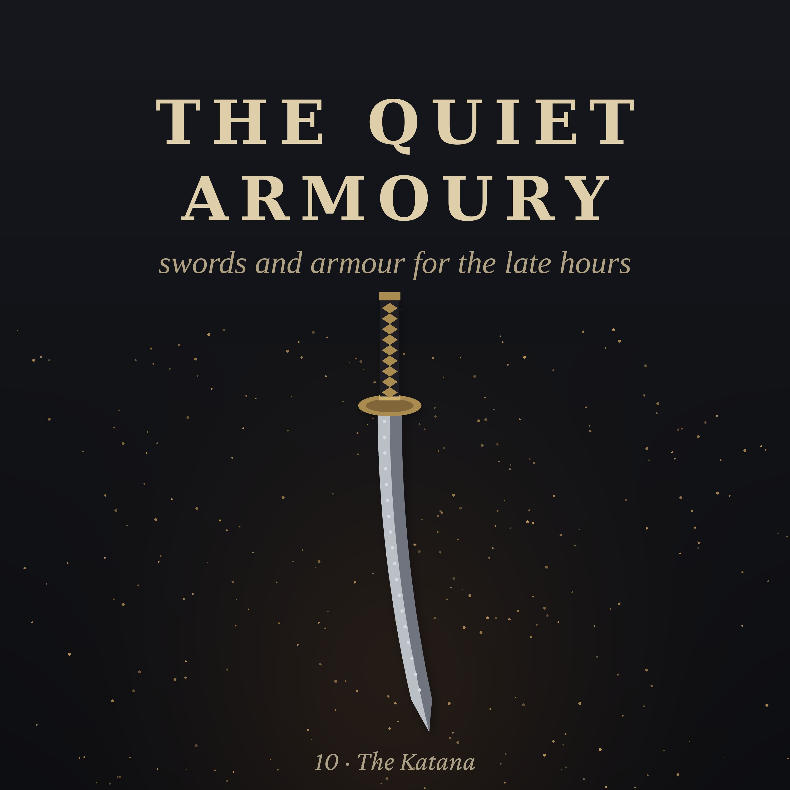

The Quiet Armoury · Episode 10 · 39 min
The Katana
Hamon: the misty line along a Japanese blade where the hard edge meets the softer body, drawn by clay and water in a single moment. A winter morning in a swordsmith's forge in the mountains of Japan: you are in your third year as an apprentice, and while the charcoal catches, we go back a thousand years... Inside: a gold-inlaid sword from a burial mound, the tachi worn edge-down and the katana edge-up, steel smelted from iron sand over three days and nights, the folding that is not a thousand times, clay painted on the blade before the quench, a polisher's stones, the name on the tang, Masamune and the lost Honjo sword, the Muramasa legend, the 1876 ban, and how to care for a blade. Chapters: 00:00 Opening 02:41 Before the curve 04:22 The tachi and the katana 06:43 Swords and manners 08:26 The steel from sand 11:08 Folding 13:57 The shape 15:11 The clay and the water 17:58 The polisher 20:31 The name on the tang 22:07 The fittings 23:54 The great smiths 27:24 Testing 28:49 The drawn moment 30:51 When the swords were put away 33:04 The way of looking 34:19 The care of a sword 36:30 Evening at the forge Sources: the Tokyo National Museum on tachi and katana, the hamon and polishing; the Society for the Preservation of Japanese Art Swords and its tatara in Shimane; the Agency for Cultural Affairs rules for licensed swordsmiths; the Haitōrei of 1876. Read by a synthetic voice; script written and fact-checked by the show's team. Additional sounds: Joseph Sardin, BigSoundBank.com (CC0).
The script
No sword in the world has as many legends attached to it as the Japanese sword.
People have said that it could cut through a falling silk scarf, or a gun barrel, or a man in armour from the shoulder to the hip. That its steel was folded a thousand times. That some swords were thirsty for blood, and others were gentle and would not cut the innocent. That the soul of the samurai lived in it.
Some of that is poetry, and some of it is nonsense. But underneath all the legends is something real, and in its own way more remarkable: a craft, passed from hand to hand for a thousand years, which is still alive today.
The Quiet Armoury. Episode ten... the katana.
It is a winter morning, in our own time, in a small town in the mountains of Japan. Snow lies on the roofs and on the bare persimmon trees, and the river beside the town runs fast and grey.
At the end of a narrow lane, there is a low wooden building with a tiled roof. Inside, there is a forge, a pair of great wooden bellows, an anvil set into the earth floor, and racks of tools. Above the forge, on a small shelf, there is a little Shinto shrine, with a folded white paper and a sprig of evergreen in front of it.
You are twenty-four, and you are in your third year as an apprentice to the swordsmith who works here. In Japan, a person may only make swords with a license from the government. To earn one, you must work for at least five years under a licensed smith, and then pass a national examination. You have two more years to go.
It is early. Your master is not here yet. You light the charcoal in the forge, and sweep the floor, and set out his tools exactly as he likes them, in the order he will use them. Then you sit by the fire, and wait for the day to begin.
While you wait, let us go back to where all this began.
Chapter one. Before the curve.
The oldest swords of Japan were not curved at all.
In the great burial mounds of the three hundreds and four hundreds, the same mounds where the first Japanese armour was found, there are straight, single-edged swords, of iron, made in the style of China and Korea. Some of them have inscriptions inlaid in gold. One, found in a mound north of Tokyo, has more than a hundred characters of gold along its blade, naming its owner and the great king he served. It is one of the oldest pieces of writing in Japan.
For centuries, Japanese smiths made straight swords. Then, sometime in the nine hundreds, something changed.
The warriors of that time were horsemen, archers, fighting from the saddle, as we heard in the episode on samurai armour. And, as we heard in the episode on the sabre, a horseman's sword wants a curve... it draws as it cuts, it comes free easily, and it can be drawn from the scabbard in one long sweep.
So the blade curved. And it did so in a particular way, that came, in part, from the way it was hardened. The first true Japanese swords, long, curved, single-edged, appear around the year one thousand.
Chapter two. The tachi and the katana.
People today call almost every Japanese sword a katana. But there are many kinds, and the first great one was the tachi.
The tachi is long, deeply curved, especially near the hilt, and it was worn hanging from the belt, edge downward, by two cords, like a cavalryman's sabre. That suits a rider. The sword hangs clear of the horse, and can be drawn downward and forward in one movement.
The katana came later, in the fourteen hundreds and fifteen hundreds, in the age of war, when more and more of the fighting was done on foot. It is a little shorter, its curve a little shallower and more even. And it is worn quite differently: thrust through the sash, at the left hip, with the edge facing upward.
That has a wonderful consequence. A sword worn edge up can be drawn and cut in a single movement... the hand crosses the body, grips the hilt, and the blade, as it leaves the scabbard, is already travelling in a cut. A whole art grew around that moment: the art of drawing the sword, which is still practised in Japan today.
And because the katana was worn the other way up, the smith's signature, which he cut into the tang, was put on the other side. So that when the sword was worn, the name faced outward. Experts can tell, from which side the name is on, whether a blade was made to be a tachi or a katana.
From the long peace onward, a samurai wore two swords together. The long one, the katana, and a short one, the wakizashi. Together they were called the daisho... the large and the small. Only samurai were allowed to wear the pair. It was the sign of their rank, as clearly as a uniform.
Chapter three. Swords and manners.
In the long peace, the two swords at a samurai's hip came with a great many rules about how they were to be worn, carried and set down.
When a samurai visited another house, he took his long sword out of his sash at the door, and left it there, on a rack, or handed it to a servant. He kept only the short sword. To walk into another man's house with your long sword still at your side was a sign that you did not trust him... or that he should not trust you.
When he sat down, he laid the sword on the floor beside him, on his right side, with the edge facing toward himself. On the right, because it is hard to draw from there quickly. Edge toward himself, as a courtesy. To lay it on the left, ready to hand, was a warning.
And in the street, there was a curious offence. If two samurai passed each other in a narrow lane, and the end of one man's scabbard knocked against the other's, it was an insult... and could end in a fight. People learned to walk on the left side of the street, it is sometimes said, so that the scabbards on their left hips would pass each other at a safe distance. Whether that is the real reason the Japanese keep to the left, historians are not sure. But it is the reason many Japanese people will tell you.
Chapter four. The steel from sand.
Your master arrives, in a padded jacket, stamping the snow off his boots. He bows to the little shrine above the forge, claps his hands twice, bows again. Then he nods to you, and goes to look at the steel.
It sits on a shelf in a wooden box. Small, flat, broken pieces of metal, silvery-grey, with a rough, crystalline surface, like broken biscuits made of iron. This is tamahagane... jewel steel.
It does not come from a mine. It comes from sand.
In the mountains of western Japan, in the rivers, there is a black sand, rich in iron. For centuries, people washed it out of the riverbeds and hillsides, and smelted it in a special furnace called a tatara... a long, low, open box of clay, as long as a small room, with great bellows on both sides.
The smelting goes on for about three days and three nights, without stopping. Every half hour or so, the workers pour in more charcoal, and more iron sand, while the bellows roar. The master of the furnace watches the colour of the flames, the sound of the fire, and the slag running out at the bottom, and decides, from them, what to do next. He does not sleep.
At the end, the clay walls of the furnace are broken open, and out comes a great glowing mass of iron and steel, weighing two tonnes or more. When it has cooled, it is broken into pieces with heavy hammers, and the pieces are sorted by eye, by colour, and by how they break. Only the best... the bright, even, high-carbon steel... is tamahagane. That is what the swordsmith wants.
The old tatara furnaces died out in the early twentieth century. But since nineteen seventy-seven, one has been worked again, every winter, in the mountains of Shimane, by a society for the preservation of Japanese swords, so that the licensed smiths of Japan can have the steel their ancestors used. Your master's box came from there.
Chapter five. Folding.
Your master chooses pieces of tamahagane, one by one, turning each in his fingers. He heats them, flattens them, breaks them again, and looks at the broken edges, to judge how much carbon is in each. Then he stacks the chosen pieces on a little iron platform at the end of a long handle, wraps the stack in wet paper, coats it with a slurry of clay and straw ash, and puts it into the fire.
When it glows yellow-white, it comes out onto the anvil. He holds it, and taps it with a small hammer. And you, standing opposite, with a heavy hammer, strike where he taps. Strike, strike, strike, in rhythm, the sparks flying, until the pieces are welded into a single block.
Then the folding begins.
The block is heated, hammered flat and long, cut almost through across the middle with a chisel, folded back onto itself, and hammered flat again. Each fold squeezes out a little more slag and evens out the carbon through the steel. Each fold also doubles the number of layers.
As we heard in the very first episode of this show, the legend of a sword folded a thousand times is just that. A Japanese blade is folded perhaps twelve to fifteen times. But fifteen folds make more than thirty thousand layers, each far thinner than a hair. On the finished blade, after polishing, they show as a fine grain, like the grain of wood, flowing along the steel. The Japanese call it the skin of the sword.
Not all of the sword is made from the same steel. The smith makes at least two kinds. A hard, high-carbon steel, for the outer skin and the edge. And a softer, lower-carbon steel, for the core. The hard steel is folded around the soft core, like the skin around a fruit, and the two are welded together and drawn out into a long bar.
Hard outside, to hold an edge. Soft inside, to absorb a blow without breaking. It is the same idea the axe smith in the Maine woods used, and the Viking pattern-welder, and the knife-maker of every land: two steels, each doing what the other cannot.
Chapter six. The shape.
Now the bar is drawn out, heated and hammered, heated and hammered, into the shape of a sword. The smith forms the point first, cutting the end of the bar at an angle and hammering it into shape. Then the edge, thinning one side of the bar into a wedge, and leaving the back thick. Then the ridge line along the side of the blade, and the tang at the bottom.
At this stage, the blade is straight. It has no curve at all.
Then he shapes it further with files and a rough stone, by hand, until it is exactly the shape he wants... the width, the thickness, the angle of the edge, the line of the ridge. A sword that is uneven by a fraction of a millimetre here will be wrong. He looks along it, again and again, holding it up to the light from the door.
All of this has taken many days. And the most important moment is still to come.
Chapter seven. The clay and the water.
The quenching is done in the evening, after dark. Your master puts out the lamps in the forge, all but the fire.
Earlier in the day, he coated the blade with clay... a special paste of clay, charcoal powder and ground stone, each smith with his own recipe, kept like a family secret. Along the back and sides of the blade, the clay is thick. Along the edge, it is very thin. And between them, he has drawn the boundary with a little spatula, in a pattern... gentle waves, or a straight line, or a row of shapes like the heads of cloves.
Now he lays the clay-covered blade in the fire, and draws it slowly back and forth through the coals, while you work the bellows. He is watching its colour. That is why the lamps are out. In the dark, he can see the exact shade of red the steel has reached... the colour, the old smiths say, of the moon in February, or of the sun at the moment it sets.
When it is right, in one movement, he lifts it out and plunges it into a long trough of water.
There is a hiss, and a cloud of steam, and a deep, sudden bubbling. And then quiet.
In that second, a great deal happens.
The thin clay over the edge lets the water reach the steel at once. The edge cools very fast, and becomes extremely hard. The thick clay over the back slows the cooling, so the back stays softer and tougher. And as the hard edge forms, it expands very slightly, while the back does not. The blade bends. The back draws in, the edge pushes out. And when the blade comes out of the water, it has its curve.
The smith shaped it straight. The water curved it.
Sometimes, the blade cracks. All those days of work, and a single fine crack at the edge means the sword has failed. Every smith has broken blades in the water. Your master takes the blade out, looks at it carefully, along its whole length, in the firelight. He says nothing. Then he nods. Then, for the first time today, he smiles.
Chapter eight. The polisher.
The swordsmith does not finish the sword. He gives it to someone else.
The polisher is a separate craftsman, as highly trained as the smith, who spends years learning the work. The sword goes to him rough and grey, its surface dull and dark. He works on it for two weeks, or three, or more.
He sits on a low stool, before a set of stones laid in wooden stands, each wetted with water. The first stones are coarse, and they shape the blade, perfecting the lines the smith made. Then finer, and finer, and finer, each one used for many hours. The last stones are not held in stands at all. They are tiny flakes of stone, thin as a fingernail, held under the polisher's thumb, and worked over the surface, a little area at a time.
The polisher is not only making the sword shiny. He is making its steel visible. Under his stones, the grain of the folding appears on the surface, like the grain of wood. And along the edge, the hardened line made by the clay and the water comes up out of the steel... a misty, white, glowing band, with its waves or cloves or straight line. That line is called the hamon.
If you hold a polished blade in the light and tilt it, and look closely at the hamon, you can see that it is made of tiny glittering crystals, like frost on a window or stars in the sky. Some smiths' steel makes larger, separate, sparkling points; the Japanese call them nie. Others make a soft, misty, unbroken glow, like the Milky Way; they call it nioi. Experts can spend an hour looking at a single blade, tilting it under a lamp, reading the hamon and the grain like a page of handwriting, and tell you, from that alone, the school of the smith, and roughly when he lived.
It is an art of looking. People in Japan have practised it for centuries. There are clubs and examinations for it, today.
Chapter nine. The name on the tang.
The last thing the smith does to the blade is to sign it.
On the tang... the part of the blade that will be hidden inside the hilt... he files a pattern of fine lines, slanting or crossed or shaped like the feathers of a hawk. Each school of smiths has its own file marks, and experts can tell schools apart by them. Then, with a small chisel and hammer, he cuts his name into the steel, character by character, and on the other side, the date. Not the exact day, usually. Often, simply, an auspicious day of a certain month of a certain year.
The tang is never polished, never cleaned, never oiled. Over the years, it slowly darkens with a fine, even rust, from brown to black. That colour, deepening over centuries, is one of the things experts use to judge a blade's age. A tang that has been scrubbed clean has lost part of its history. Collectors wince at the thought.
When the hilt is put on, a small bamboo peg goes through a hole in the hilt and a hole in the tang, and holds them together. Take out the peg, and the hilt slides off, and the name is there, hidden all along, just as the smith left it.
Chapter ten. The fittings.
A blade without its fittings is not yet a sword. That, too, is other people's work.
There is the habaki, a little collar of copper or silver around the base of the blade, which holds it snug in the scabbard. There is the tsuba, the guard... a flat plate of iron or copper alloy, round or square or shaped like a flower, between the blade and the hilt. There is the hilt itself, a core of wood, wrapped in the pale, bumpy skin of a ray fish, and then bound over in a diamond pattern with silk or cotton braid. And there is the scabbard, of soft magnolia wood, lacquered black, or red, or with gold dust in the lacquer.
The guards, especially, became an art of their own. In the long peace, when swords were rarely drawn, the tsuba was where a samurai could show his taste. They were made of iron, chiselled with landscapes, birds, waves, dragonflies, the moon among clouds, pierced and inlaid with gold, silver and copper alloys in many colours. There were families of tsuba makers for generations. Collectors in Japan and abroad still compete for them.
A tsuba is often the only part of a samurai's sword that a museum visitor really looks at. It is about the size of a palm. Some of them took a year to make.
Chapter eleven. The great smiths.
Every craft has its legends, and the Japanese sword's are two smiths, who lived about two hundred years apart.
The first is Masamune, who worked in Sagami, near Kamakura, the old capital of the warrior government, around the year thirteen hundred. He is remembered as the greatest smith in Japan. His blades show a wild, brilliant steel, full of glittering lines and sparkles in the hamon, like lightning in a storm. Very few blades signed by him survive, and experts argue about most of them, but those that are accepted are treasures of the nation.
The most famous of all, the Honjo Masamune, was passed down for centuries in the family of the Tokugawa shoguns. At the end of the Second World War, in December nineteen forty-five, when the American occupation ordered Japanese families to hand in their swords, the head of the Tokugawa family gave it, with others, to the authorities.
It has not been seen since.
Nobody knows where it is. Perhaps in a house in America, in an attic, wrapped in a blanket, and the person who owns it has no idea what it is. Perhaps it was lost long ago. Every few years, someone believes they have found it. So far, they have always been wrong.
The second legend is Muramasa, who worked in Ise, in the fifteen hundreds. His blades were famously sharp, and famously popular. And the story grew up that they were cursed... that a Muramasa blade, once drawn, would not rest until it had drawn blood, and that it brought bad luck to the family of the shoguns in particular. Several members of the Tokugawa family, it was said, had been killed or wounded by Muramasa blades.
So, the story goes, the Tokugawa banned them, and people who owned them filed off the signatures, or hid them away. In fact, historians say, the Tokugawa themselves owned Muramasa blades, and the curse is mostly a legend that grew up later, in plays and novels. But it was too good a story to let go. Muramasa's name is still, in Japanese stories and films and games, the name of a blade that is thirsty.
And there is a gentle old tale, never meant to be history, about the two of them. A blade by Muramasa and a blade by Masamune are held upright in a stream, edge facing the current. Leaves floating down the stream drift into the Muramasa, and are cut cleanly in two. Leaves drifting toward the Masamune slip around it, and float on unharmed. A monk watching explains that Masamune's sword was the finer, because it would not cut what did not need to be cut.
Chapter twelve. Testing.
How sharp is a Japanese sword, really?
Very. A well-made, well-polished blade has an edge that can cut through a tightly rolled straw mat, as thick as a man's arm, at a single stroke, without any apparent effort. The practice of test-cutting rolled mats, soaked in water, is still done today, as a martial art. It shows the skill of the cutter as much as the sharpness of the sword... a cut at the wrong angle, by a sword that is perfect, will stick halfway.
In the old days, swords were sometimes tested by official testers, and the results were cut into the tang, sometimes inlaid in gold, as a recommendation for the sword. We will not go into the details of what was cut. It was a different age.
And the legends of swords cutting through gun barrels? Such stories are told, and some may even be true, of soft old iron. But a sword that has cut metal is usually a damaged sword afterwards. A sword is a sword. It is not magic.
Chapter thirteen. The drawn moment.
In a hall in the same town, on the floor above a shop, there is a class on Tuesday evenings, and you go to it when you can. It is a class in the art of drawing the sword.
The students kneel on the wooden floor in a row, in dark jackets and wide trousers, each with a sword at the left hip. There is no opponent. Each student is alone, facing an imaginary attacker, and each form... each kata... is a short story told with the sword. You are sitting, and a man opposite reaches for his weapon. You draw and cut in one movement. You cut again. You shake the blade, a single sharp flick, as if to throw off what is on it. And then, very slowly, you return the sword to its scabbard, sliding the back of the blade along the gap between your thumb and forefinger, until the guard meets the mouth of the scabbard with a small, quiet click.
That last part, the return, is often the slowest of all. The teachers say it is the most important. A fight may take a second. The calm afterward is what shows who you are.
The students practise with blunt, unsharpened blades of alloy at first, and only after years with real steel. Even then, the sword is never drawn carelessly, never pointed at anyone in jest, never stepped over when it lies on the floor. The teacher, an elderly woman who has practised for fifty years, moves so slowly and smoothly that the sword seems to grow out of her hand, and then, suddenly, it is out, and has cut, and is already going back.
Chapter fourteen. When the swords were put away.
As we heard in the episode on samurai armour, in eighteen seventy-six the new government of Japan forbade anyone but soldiers and police to wear swords in public. The samurai class was gone. Hundreds of swordsmiths lost their work almost overnight. Many became knife makers, or toolmakers, or farmers.
In the nineteen thirties and forties, the army ordered swords again for its officers, in their thousands. Many were made in factories, of ordinary steel, quickly, with only the shape of the old swords. A few smiths kept the old methods alive.
Then, after the Second World War, the occupation forces ordered the swords of Japan to be handed in. Hundreds of thousands were collected. Many were destroyed. Many were taken home as souvenirs by soldiers, which is why so many old Japanese blades are now in houses in America, Australia and Britain.
For a few years, it seemed the craft might die completely. But people in Japan argued that the sword was an art, as well as a weapon... a treasure of the nation, like a temple or a painting. In the end, they won. Swords made in the traditional way were registered as works of art. And in nineteen fifty-three, the making of swords by licensed smiths was allowed again, under strict rules: the traditional steel, the traditional methods, at least five years of apprenticeship, and only a limited number of long swords each month.
There are a few hundred licensed swordsmiths in Japan today. Your master is one of them.
Chapter fifteen. The way of looking.
What made the Japanese sword so famous in the world?
Partly the stories, of course... the samurai, the duels, the films. But mostly, perhaps, it is the way the Japanese looked at it. In most of the world, a sword was a weapon, and when it was old, it was thrown away or melted down. In Japan, a fine blade was a work of art, from the beginning. It was kept, polished, studied, written about, and handed down for centuries. It was given its own boxes, its own bags of silk, its own certificates. There are blades in Japan today, still sharp and bright, that were made eight hundred years ago, and have never left the care of the people who loved them.
And so people around the world came to see what the Japanese saw: that a piece of steel could be made so carefully, by so many skilled hands, that it became beautiful in itself.
Chapter sixteen. The care of a sword.
Before you leave, your master shows you, for the fifth or sixth time, how to care for a finished blade. He says it is the thing you will do most often in your life, and so you must do it best.
First, you never breathe on it. Moisture from breath can mark the polish and start rust. In the old days, people looking at a fine sword held a folded square of paper between their lips, so that they would not breathe on the steel while they admired it. Some still do.
You draw the blade slowly from its scabbard, edge up, and lay it on a soft cloth. You fold a sheet of soft paper over the back of the blade, and wipe off the old oil in one slow stroke, from the hilt toward the point, never the other way. Then you take a little silk ball on a stick, filled with a powder of very fine polishing stone, and tap it gently along both sides of the blade, so that a faint white dust settles on the steel. That powder, wiped off with clean paper, lifts away the last of the old oil. Then you put a drop of fresh oil, scented with cloves, on a soft cloth, and draw it along the blade, leaving only the thinnest film.
Then the sword goes back into its scabbard. And if it is to be stored for a long time, it goes into a plain resting scabbard of soft, unvarnished magnolia wood, with a plain wooden handle, that lets the steel breathe, and protects it from the damp.
The smell of clove oil, your master says, is the smell of every sword collection in Japan. You will notice it, he says, for the rest of your life, in every museum you walk into. And you do.
Chapter seventeen. Evening at the forge.
It has been a long day. The blade quenched last night lies on the bench, rough and grey, its new curve gentle and even. Tomorrow your master will begin to shape it with files. In a month, it will go to the polisher. In two or three months, someone will see its hamon for the first time.
You clean the forge, and rake out the ashes, and sweep the floor. Your master sits by the dying fire with a cup of tea, and looks at nothing in particular.
Then he says something, quietly, almost to himself. The steel, he says, comes from the sand of the rivers. The charcoal comes from the trees on the mountains. The water comes from the river. The fire is the fire. All the smith does is bring them together, and listen to what they want to become.
He finishes his tea. He bows to the little shrine, claps twice, bows again. And the two of you walk out into the snow, and he slides the door of the forge closed behind you.
The lane is quiet. The snow has stopped. The river runs dark beside the road, and the lights of the little town are on in the windows, one after another, up the side of the valley. Somewhere a dog barks, and stops. Your master walks ahead of you, his hands in his sleeves, his breath white in the cold, and does not say anything else. He does not need to.
No sword in the world has as many legends attached to it as the Japanese sword.
But the word itself is very plain. In Japanese, katana simply means a single-edged blade. A knife, almost. A sword. Nothing more.
All the rest... the folding and the clay and the water, the polish, the hamon, the thousand years... the Japanese put into it themselves.
This story was read by a synthetic voice. If these stories keep you company at night, follow the show... it helps others find it.
Also from the late hours: Embers of History · Slow Orbit · Myth and Score
On YouTube: Opera Stories · Slow Orbit
Free line-by-line English translations of art songs
Enjoying the shows? Leave a tip (no fees)